# Install required packages if not already installed
packages <- c("tidyverse", "dplyr", "ggplot2", "reshape2",
"FactoMineR", "factoextra", "corrplot")
installed <- rownames(installed.packages())
for (p in packages) {
if (!(p %in% installed)) {
install.packages(p)
}
}11 Module 2.3: General Biostatistics
We will be using an artificial data set of plant traits to practice some general biostatistical analyses. We first need to start by loading the required libraries.
11.1 Libraries
# Loading required libraries
library(tidyverse)── Attaching core tidyverse packages ──────────────────────── tidyverse 2.0.0 ──
✔ dplyr 1.1.4 ✔ readr 2.1.5
✔ forcats 1.0.0 ✔ stringr 1.5.2
✔ ggplot2 4.0.0 ✔ tibble 3.3.0
✔ lubridate 1.9.4 ✔ tidyr 1.3.1
✔ purrr 1.1.0
── Conflicts ────────────────────────────────────────── tidyverse_conflicts() ──
✖ dplyr::filter() masks stats::filter()
✖ dplyr::lag() masks stats::lag()
ℹ Use the conflicted package (<http://conflicted.r-lib.org/>) to force all conflicts to become errorslibrary(readxl)
library(dplyr)
library(ggplot2)
library(reshape2)
Attaching package: 'reshape2'
The following object is masked from 'package:tidyr':
smithslibrary(FactoMineR)
library(factoextra)Welcome! Want to learn more? See two factoextra-related books at https://goo.gl/ve3WBalibrary(corrplot)corrplot 0.95 loaded11.2 Data import
Lets import our excel data sheet into R.
# Import excel data
data <- read_excel("data/PlantData.xlsx")11.3 Exploring data
# Lets see how it looks
str(data)tibble [90 × 11] (S3: tbl_df/tbl/data.frame)
$ PlantID : num [1:90] 1 2 3 4 5 6 7 8 9 10 ...
$ Species : chr [1:90] "SpeciesA" "SpeciesA" "SpeciesA" "SpeciesA" ...
$ Treatment : chr [1:90] "Control" "Control" "Control" "Control" ...
$ Location : chr [1:90] "Field" "Field" "Field" "Field" ...
$ Height_cm : num [1:90] 145 133 154 150 167 ...
$ LeafLength_cm: num [1:90] 24.5 26.9 27.7 32.1 32.2 ...
$ LeafWidth_cm : num [1:90] 8.02 10.73 9.21 11.4 10.03 ...
$ Biomass_g : num [1:90] 278 228 224 239 254 ...
$ Yield_g : num [1:90] 342 238 290 282 341 ...
$ Chlorophyll : num [1:90] 42.5 48.1 33.7 37.3 56.3 ...
$ Color : chr [1:90] "Green" "Green" "Green" "Green" ...We can see that we have a few numeric variables and a few character variables. We want to turn these character variables into factors (categories) for posterior analyses.
# Turning into factor
data$Species <- factor(data$Species)
data$Treatment <- factor(data$Treatment)
data$Location <- factor(data$Location)
data$Color <- factor(data$Color)
# Exploring again
str(data)tibble [90 × 11] (S3: tbl_df/tbl/data.frame)
$ PlantID : num [1:90] 1 2 3 4 5 6 7 8 9 10 ...
$ Species : Factor w/ 3 levels "SpeciesA","SpeciesB",..: 1 1 1 1 1 1 1 1 1 1 ...
$ Treatment : Factor w/ 2 levels "Control","Treated": 1 1 1 1 1 1 1 1 1 1 ...
$ Location : Factor w/ 2 levels "Field","Greenhouse": 1 1 1 1 1 1 1 1 1 1 ...
$ Height_cm : num [1:90] 145 133 154 150 167 ...
$ LeafLength_cm: num [1:90] 24.5 26.9 27.7 32.1 32.2 ...
$ LeafWidth_cm : num [1:90] 8.02 10.73 9.21 11.4 10.03 ...
$ Biomass_g : num [1:90] 278 228 224 239 254 ...
$ Yield_g : num [1:90] 342 238 290 282 341 ...
$ Chlorophyll : num [1:90] 42.5 48.1 33.7 37.3 56.3 ...
$ Color : Factor w/ 3 levels "Green","LightGreen",..: 1 1 1 1 1 2 1 1 1 2 ...# Exploring frequencies
table(data$Species)
SpeciesA SpeciesB SpeciesC
30 30 30 table(data$Treatment)
Control Treated
45 45 table(data$Location)
Field Greenhouse
45 45 table(data$Color)
Green LightGreen Yellow
31 31 28 11.4 Basic Summaries
Lets perform some basic statistic summaries of our data.
summary(data) PlantID Species Treatment Location Height_cm
Min. : 1.00 SpeciesA:30 Control:45 Field :45 Min. :124.8
1st Qu.:23.25 SpeciesB:30 Treated:45 Greenhouse:45 1st Qu.:155.9
Median :45.50 SpeciesC:30 Median :168.6
Mean :45.50 Mean :168.1
3rd Qu.:67.75 3rd Qu.:180.6
Max. :90.00 Max. :216.4
LeafLength_cm LeafWidth_cm Biomass_g Yield_g
Min. :24.14 Min. : 6.409 Min. :219.7 Min. :238.2
1st Qu.:30.22 1st Qu.: 8.732 1st Qu.:269.7 1st Qu.:299.1
Median :33.11 Median : 9.829 Median :292.0 Median :325.7
Mean :33.17 Mean : 9.975 Mean :289.8 Mean :324.8
3rd Qu.:36.42 3rd Qu.:11.184 3rd Qu.:307.3 3rd Qu.:351.5
Max. :43.84 Max. :13.424 Max. :384.9 Max. :408.3
Chlorophyll Color
Min. :24.15 Green :31
1st Qu.:34.83 LightGreen:31
Median :39.52 Yellow :28
Mean :38.93
3rd Qu.:43.18
Max. :56.25 11.5 Data Distribution
We can use histograms on our numeric variables to explore their distribution.
# Histograms
par(mfrow = c(2, 3))
hist(data$Height_cm, main = "Height", xlab = "cm", col = "lightblue", breaks = 10)
hist(data$LeafLength_cm, main = "Leaf Length", xlab = "cm", col = "lightgreen", breaks = 10)
hist(data$LeafWidth_cm, main = "Leaf Width", xlab = "cm", col = "lightgreen", breaks = 10)
hist(data$Biomass_g, main = "Biomass", xlab = "g", col = "orange", breaks = 10)
hist(data$Yield_g, main = "Yield", xlab = "g", col = "purple", breaks = 10)
hist(data$Chlorophyll, main = "Chlorophyll", xlab = "Index", col = "darkgreen", breaks = 10)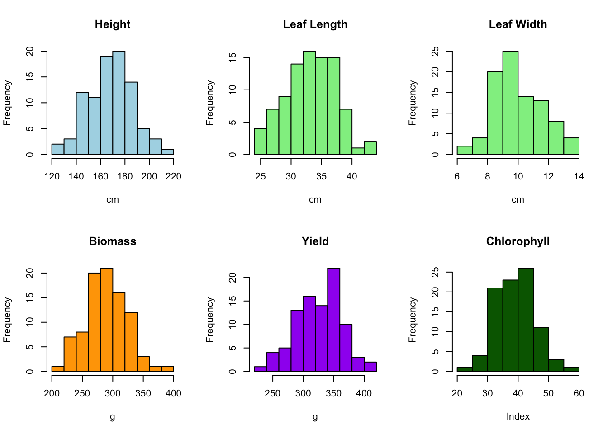
par(mfrow = c(1, 1))11.6 Significant differences between two groups
We want to explore the effect of treatment (Control vs Treated) on Height. On our histogram we have seen that height is approximately symmetric and close to a normal distribution, so we can use a t-test. Even if the distribution is not perfectly normal, we can usually still use a t-test.
11.6.1 T-test
A t-test is a statistical test used to compare means between groups (or a group vs. a reference) to see if they are significantly different. It assumes data is approximately normally distributed.
t.test(Height_cm ~ Location, data = data)
Welch Two Sample t-test
data: Height_cm by Location
t = -3.4363, df = 79.844, p-value = 0.0009387
alternative hypothesis: true difference in means between group Field and group Greenhouse is not equal to 0
95 percent confidence interval:
-19.727554 -5.257546
sample estimates:
mean in group Field mean in group Greenhouse
161.8530 174.3455 We obtain a p-value of 0.009387, which is less than our threshold of 0.05. This means there is a significant difference in heights between our two groups.
If p-value < 0.05 → Significant difference between groups
11.6.2 Wilcoxon signed-rank test
If our data is not normally distributed (not symmetric or skewed) and we want an alternative to the t-test, we can use a Wilcoxon signed-rank test. Instead of comparing means, it compares medians/distributions between groups. We now want to explore the effect of treatment (Control vs Treated) on Leaf Length.
wilcox.test(LeafLength_cm ~ Treatment, data = data)
Wilcoxon rank sum exact test
data: LeafLength_cm by Treatment
W = 1110, p-value = 0.4356
alternative hypothesis: true location shift is not equal to 0In this case our p-value is greater than 0.05, meaning that there is no significant difference between both groups.
11.7 Significant differences between multiple groups
If we wanted to explore the effect of our different Species on Biomass we would use an Analysis of Variance (ANOVA), given we have more than two groups.
ANOVA is used to test if three or more groups are significantly different!
11.7.1 ANOVA
# Carrying out ANOVA
a1 <- aov(Biomass_g ~ Species, data = data)
# Printing results
summary(a1) Df Sum Sq Mean Sq F value Pr(>F)
Species 2 51360 25680 42.11 1.62e-13 ***
Residuals 87 53058 610
---
Signif. codes: 0 '***' 0.001 '**' 0.01 '*' 0.05 '.' 0.1 ' ' 1We can see that our obtained p-value is very small and less than 0.05, meaning species has a significant effect on biomass. We can also make pairwise comparisons between our groups to have a more detailed view of their effect on our experimental measure.
# Pairwise comparisons between groups
TukeyHSD(a1) Tukey multiple comparisons of means
95% family-wise confidence level
Fit: aov(formula = Biomass_g ~ Species, data = data)
$Species
diff lwr upr p adj
SpeciesB-SpeciesA 33.27007 18.065895 48.47425 0.0000036
SpeciesC-SpeciesA 58.32229 43.118109 73.52646 0.0000000
SpeciesC-SpeciesB 25.05221 9.848038 40.25639 0.000496611.8 Significant differences between multiple groups and conditions
If we wanted to evaluate the effect of species AND location on Yield we could use a Two-way ANOVA, which allows us to evaluate the effect of each of these conditions and of the interaction between them.
11.8.1 Two-way ANOVA
# Carrying out ANOVA
a2 <- aov(Yield_g ~ Species * Location, data = data)
# Printing results
summary(a2) Df Sum Sq Mean Sq F value Pr(>F)
Species 2 47772 23886 31.149 7.58e-11 ***
Location 1 7590 7590 9.898 0.00229 **
Species:Location 2 1564 782 1.020 0.36512
Residuals 84 64415 767
---
Signif. codes: 0 '***' 0.001 '**' 0.01 '*' 0.05 '.' 0.1 ' ' 1# Pairwise comparisons between groups
TukeyHSD(a2) Tukey multiple comparisons of means
95% family-wise confidence level
Fit: aov(formula = Yield_g ~ Species * Location, data = data)
$Species
diff lwr upr p adj
SpeciesB-SpeciesA 26.67084 9.611157 43.73053 0.0010017
SpeciesC-SpeciesA 56.40651 39.346826 73.46619 0.0000000
SpeciesC-SpeciesB 29.73567 12.675984 46.79535 0.0002249
$Location
diff lwr upr p adj
Greenhouse-Field 18.36719 6.757727 29.97665 0.0022888
$`Species:Location`
diff lwr upr
SpeciesB:Field-SpeciesA:Field 16.528851 -12.9623077 46.02001
SpeciesC:Field-SpeciesA:Field 52.360377 22.8692190 81.85154
SpeciesA:Greenhouse-SpeciesA:Field 8.908442 -20.5827165 38.39960
SpeciesB:Greenhouse-SpeciesA:Field 45.721274 16.2301156 75.21243
SpeciesC:Greenhouse-SpeciesA:Field 69.361084 39.8699252 98.85224
SpeciesC:Field-SpeciesB:Field 35.831527 6.3403684 65.32269
SpeciesA:Greenhouse-SpeciesB:Field -7.620409 -37.1115672 21.87075
SpeciesB:Greenhouse-SpeciesB:Field 29.192423 -0.2987351 58.68358
SpeciesC:Greenhouse-SpeciesB:Field 52.832233 23.3410746 82.32339
SpeciesA:Greenhouse-SpeciesC:Field -43.451936 -72.9430939 -13.96078
SpeciesB:Greenhouse-SpeciesC:Field -6.639103 -36.1302618 22.85205
SpeciesC:Greenhouse-SpeciesC:Field 17.000706 -12.4904521 46.49186
SpeciesB:Greenhouse-SpeciesA:Greenhouse 36.812832 7.3216737 66.30399
SpeciesC:Greenhouse-SpeciesA:Greenhouse 60.452642 30.9614834 89.94380
SpeciesC:Greenhouse-SpeciesB:Greenhouse 23.639810 -5.8513487 53.13097
p adj
SpeciesB:Field-SpeciesA:Field 0.5782968
SpeciesC:Field-SpeciesA:Field 0.0000219
SpeciesA:Greenhouse-SpeciesA:Field 0.9500602
SpeciesB:Greenhouse-SpeciesA:Field 0.0002816
SpeciesC:Greenhouse-SpeciesA:Field 0.0000000
SpeciesC:Field-SpeciesB:Field 0.0082318
SpeciesA:Greenhouse-SpeciesB:Field 0.9743273
SpeciesB:Greenhouse-SpeciesB:Field 0.0539774
SpeciesC:Greenhouse-SpeciesB:Field 0.0000182
SpeciesA:Greenhouse-SpeciesC:Field 0.0006427
SpeciesB:Greenhouse-SpeciesC:Field 0.9860814
SpeciesC:Greenhouse-SpeciesC:Field 0.5478532
SpeciesB:Greenhouse-SpeciesA:Greenhouse 0.0060550
SpeciesC:Greenhouse-SpeciesA:Greenhouse 0.0000008
SpeciesC:Greenhouse-SpeciesB:Greenhouse 0.1908068Our results show that on their own, species and location do have a significant effect on yield as we have obtained a p-value smaller than 0.05: however, the interaction effect does not seem to have a significant effect as the obtained p-value is greater than 0.05.
11.9 Pearson Correlation
Pearson correlation is a statistic (often written as r) that measures the linear relationship between two continuous variables.
Ranges from -1 to +1
+1 → perfect positive linear relationship (when one increases, the other always increases proportionally)
0 → no linear relationship.
-1 → perfect negative linear relationship (when one increases, the other always decreases proportionally).
Now we want to see if there is a relationship between our different numerical values. We can calculate their correlation and plot them as a correlation map.
# Lets separate the numeric and factor variables
num_vars <- c("Height_cm","Biomass_g","Yield_g","Chlorophyll",
"LeafLength_cm","LeafWidth_cm")
# Create a filtered data frame of only our numeric variables
num_df <- data[ , num_vars]
# Calculate our pearson correlation
cor_mat <- cor(num_df, use = "pairwise.complete.obs", method = "pearson")
cor_mat Height_cm Biomass_g Yield_g Chlorophyll LeafLength_cm
Height_cm 1.0000000 0.6450521 0.47549955 -0.43031897 0.1543019
Biomass_g 0.6450521 1.0000000 0.50074384 -0.46928736 0.1750263
Yield_g 0.4754996 0.5007438 1.00000000 -0.26681865 0.1910125
Chlorophyll -0.4303190 -0.4692874 -0.26681865 1.00000000 0.0794551
LeafLength_cm 0.1543019 0.1750263 0.19101246 0.07945510 1.0000000
LeafWidth_cm 0.2479400 0.1469155 0.08928293 -0.06247535 0.2024340
LeafWidth_cm
Height_cm 0.24794000
Biomass_g 0.14691551
Yield_g 0.08928293
Chlorophyll -0.06247535
LeafLength_cm 0.20243403
LeafWidth_cm 1.00000000# Plot results
corrplot(cor_mat, method = "color", type = "upper", addCoef.col = "black",
tl.col = "black", tl.srt = 45, number.cex = 0.7,
mar = c(0,0,2,0))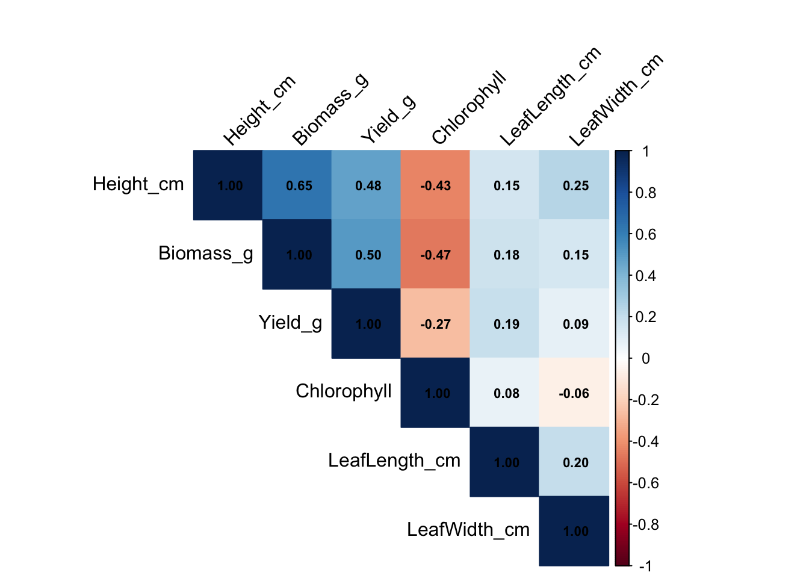
11.10 PCA
A PCA transforms many correlated variables (Height, Biomass, Yield, Chlorophyll, etc.) into a smaller set of uncorrelated components (PC1, PC2, …). Each component aims to capture as much variance as possible. It is a common technique used to visualize multi-variate data and identify correlated traits.
# Using FactoMineR so we can color by groups easily
pca <- PCA(num_df, scale.unit = TRUE, graph = FALSE)
# Individuals plot colored by Species with 95% ellipses
fviz_pca_ind(
pca,
habillage = data$Species, addEllipses = FALSE,
title = "PCA of Plant Traits (colored by Species)"
)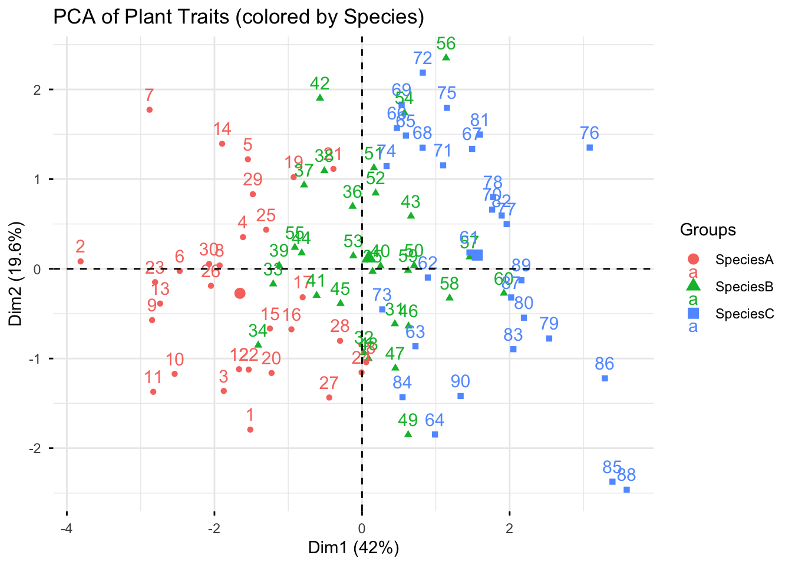
# Variable loadings
fviz_pca_var(pca, title = "PCA Variable Loadings")Warning: Using `size` aesthetic for lines was deprecated in ggplot2 3.4.0.
ℹ Please use `linewidth` instead.
ℹ The deprecated feature was likely used in the ggpubr package.
Please report the issue at <https://github.com/kassambara/ggpubr/issues>.Warning: `aes_string()` was deprecated in ggplot2 3.0.0.
ℹ Please use tidy evaluation idioms with `aes()`.
ℹ See also `vignette("ggplot2-in-packages")` for more information.
ℹ The deprecated feature was likely used in the factoextra package.
Please report the issue at <https://github.com/kassambara/factoextra/issues>.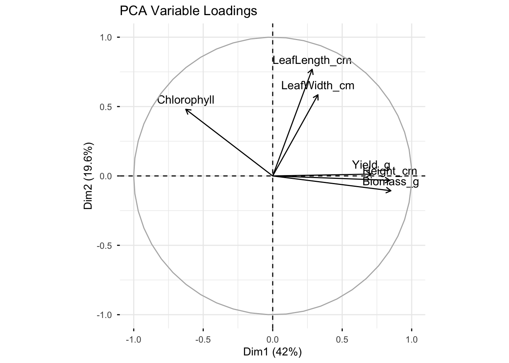
Direction of arrow = how that variable contributes to the PCA axes (Dim1, Dim2).
Length of arrow = strength of contribution (longer = explains more of that axis).
Angle between arrows = correlation between variables.
Small angle (pointing in the same direction) → strong positive correlation.
Opposite direction (180° apart) → strong negative correlation.
90° apart → little/no correlation.
11.11 Plots
Lets move on to making some publication-ready plots with ggplot2.
11.11.1 Box plots
Each box shows the median, quartiles, and outliers.
ggplot(data, aes(Treatment, Height_cm, fill = Treatment)) +
geom_boxplot() +
labs(title = "Height by Treatment", y = "Height (cm)", x = NULL) +
theme_minimal() + theme(legend.position = "none")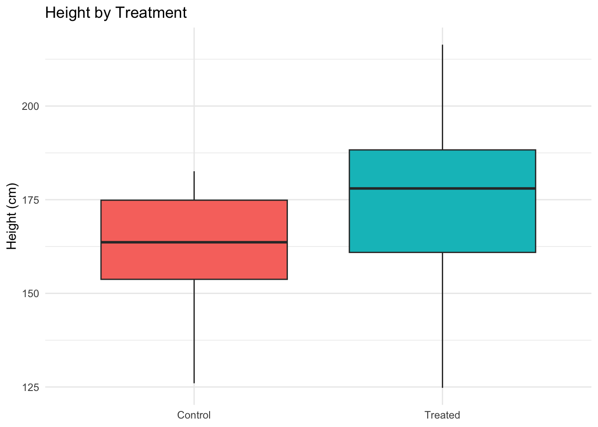
ggplot(data, aes(Treatment, Biomass_g, fill = Treatment)) +
geom_boxplot() +
labs(title = "Biomass by Treatment", y = "Biomass (g)", x = NULL) +
theme_minimal() + theme(legend.position = "none")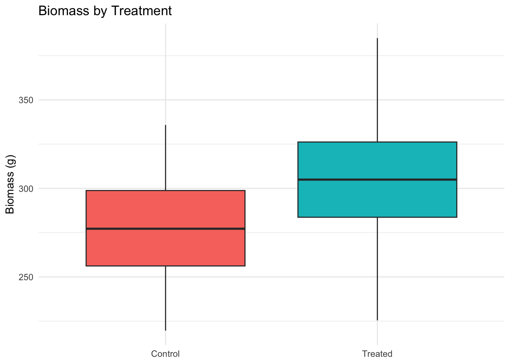
ggplot(data, aes(Species, Biomass_g, fill = Species)) +
geom_boxplot() +
labs(title = "Biomass by Species", y = "Biomass (g)", x = NULL) +
theme_minimal() + theme(legend.position = "none")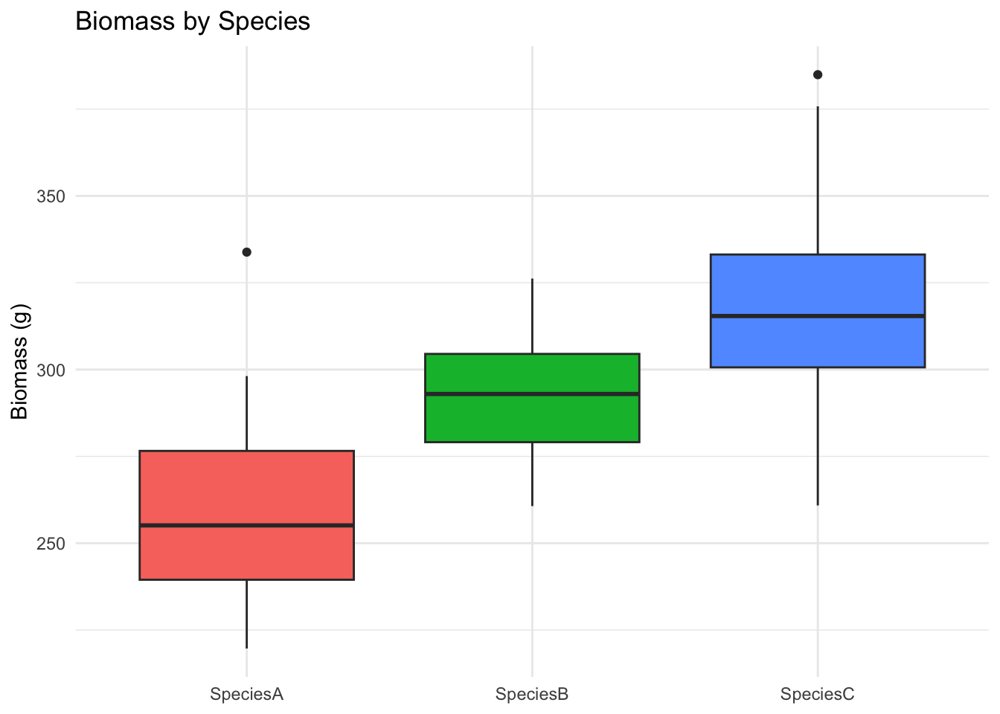
ggplot(data, aes(Species, Chlorophyll, fill = Species)) +
geom_boxplot() +
labs(title = "Chlorophyll by Species", y = "Chlorophyll", x = NULL) +
theme_minimal() + theme(legend.position = "none")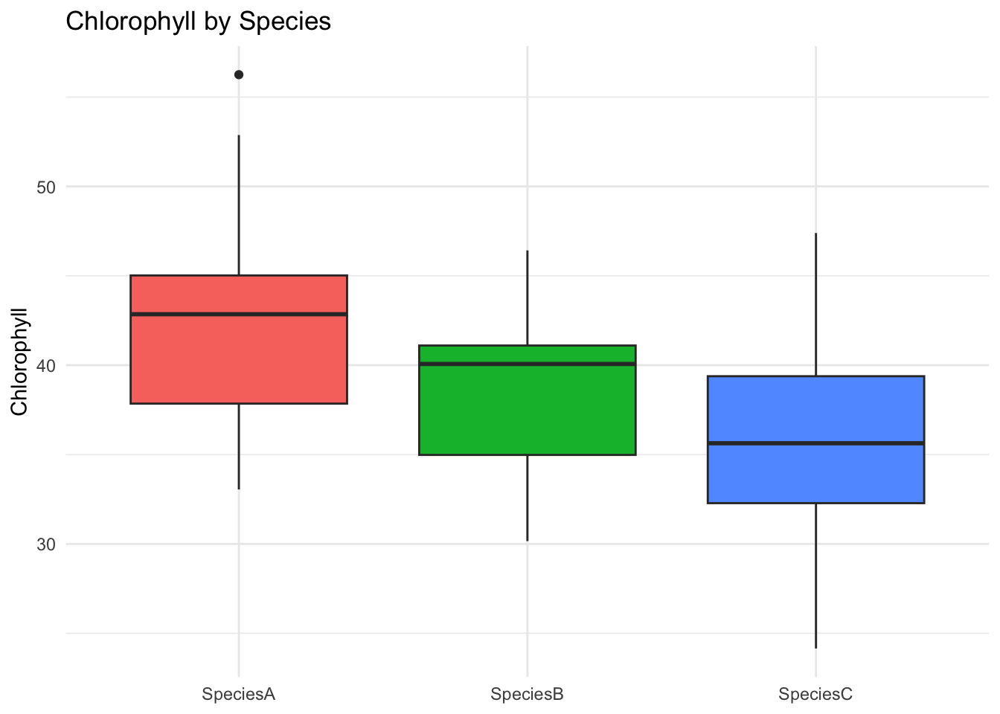
ggplot(data, aes(Location, Yield_g, fill = Location)) +
geom_boxplot() +
labs(title = "Yield by Location (↑ in Greenhouse)", y = "Yield (g)", x = NULL) +
theme_minimal() + theme(legend.position = "none")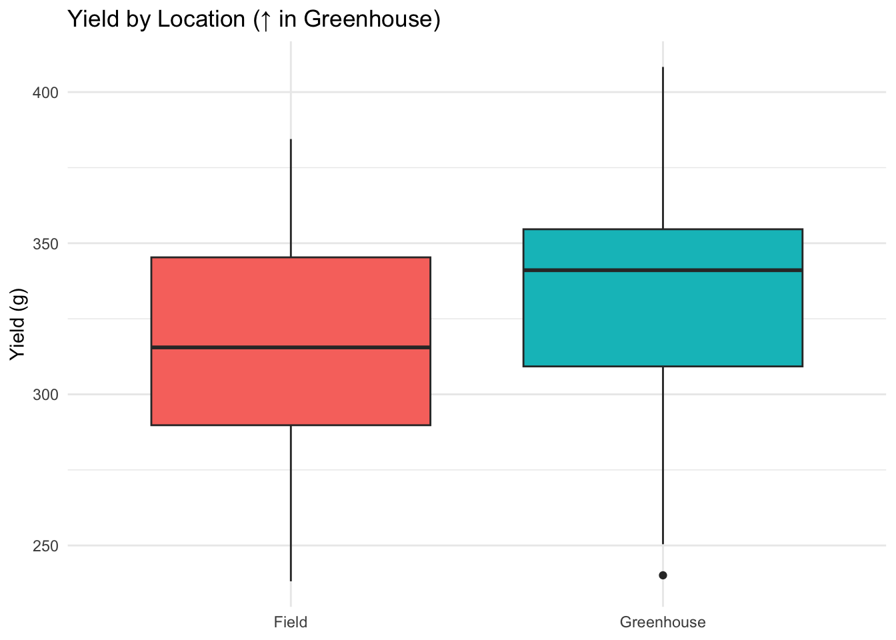
ggplot(data, aes(Location, Chlorophyll, fill = Location)) +
geom_boxplot() +
labs(title = "Chlorophyll by Location (↓ in Greenhouse)", y = "Chlorophyll", x = NULL) +
theme_minimal() + theme(legend.position = "none")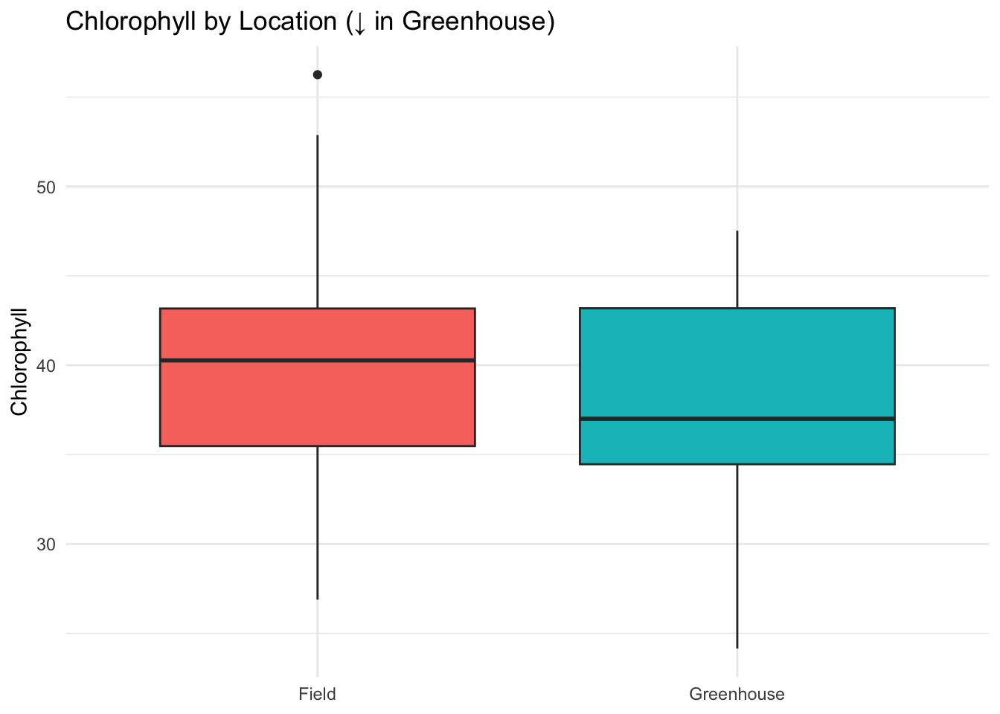
11.11.2 Scatter plot
ggplot(data, aes(Height_cm, Biomass_g, color = Species)) +
geom_point(alpha = 0.8, size = 2.3) +
geom_smooth(method = "lm", se = TRUE) +
labs(title = "Height vs Biomass (by Species)",
x = "Height (cm)", y = "Biomass (g)") +
theme_minimal()`geom_smooth()` using formula = 'y ~ x'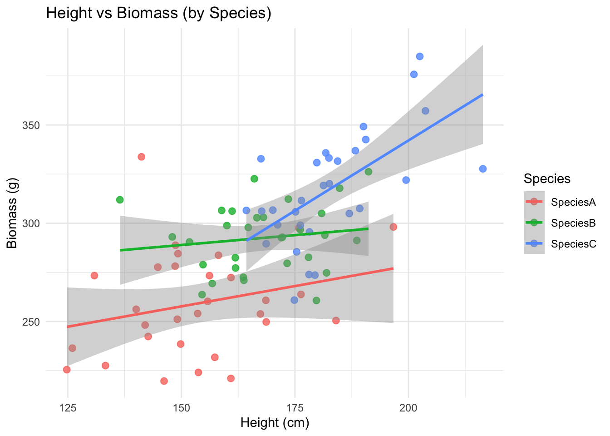
ggplot(data, aes(Chlorophyll, Yield_g, color = Location)) +
geom_point(size = 3, alpha = 0.8) +
geom_smooth(method = "lm", se = TRUE) +
labs(title = "Yield vs Chlorophyll by Location") +
theme_minimal()`geom_smooth()` using formula = 'y ~ x'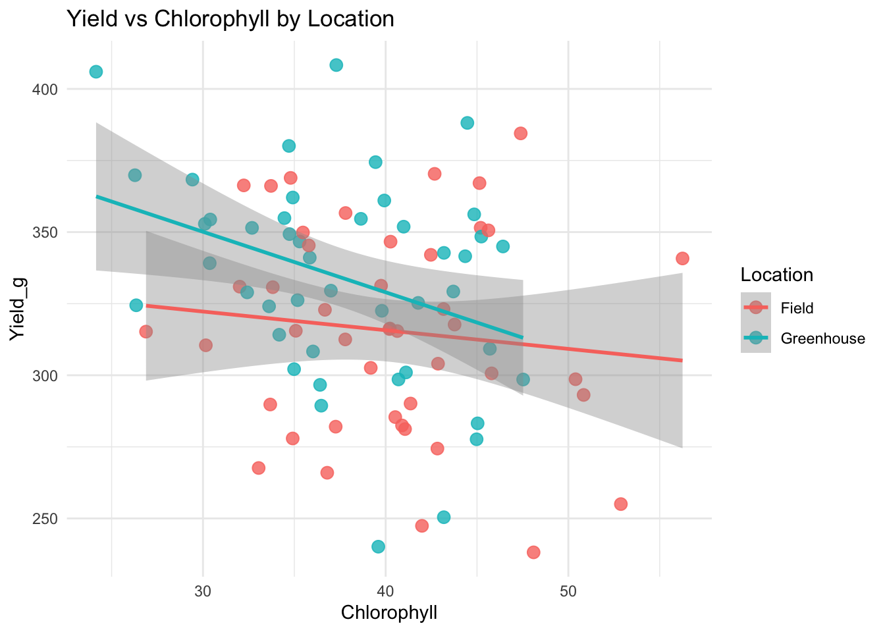
ggplot(data, aes(Height_cm, Yield_g, color = Treatment)) +
geom_point(size = 2.5, alpha = 0.8) +
geom_smooth(method = "lm", se = FALSE) +
facet_grid(Species ~ Location) +
labs(title = "Height vs Yield faceted by Species & Location") +
theme_minimal()`geom_smooth()` using formula = 'y ~ x'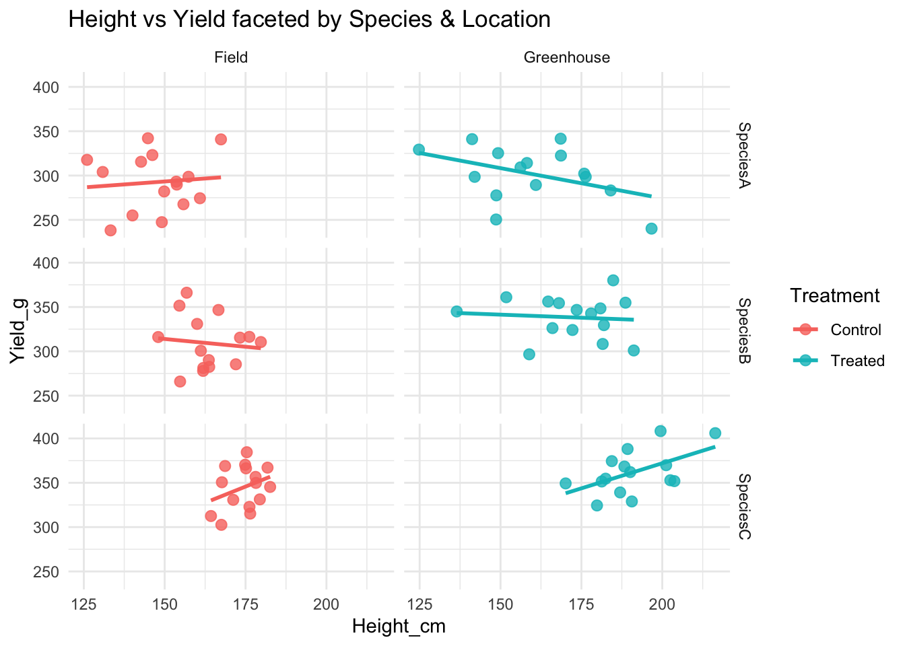
11.11.3 Bar plots
# Summarise: mean + standard error
df_summary <- group_by(data, Species, Treatment)
df_summary <- summarise(df_summary,
mean_height = mean(Height_cm, na.rm = TRUE),
se_height = sd(Height_cm, na.rm = TRUE) / sqrt(n()),
.groups = "drop")
# Bar plot with error bars
ggplot(df_summary, aes(x = Species, y = mean_height, fill = Treatment)) +
geom_col(position = position_dodge(width = 0.8), width = 0.7) +
geom_errorbar(aes(ymin = mean_height - se_height,
ymax = mean_height + se_height),
position = position_dodge(width = 0.8),
width = 0.25) +
labs(title = "Mean Height by Species and Treatment",
y = "Height (cm)", x = "Species") +
theme_minimal()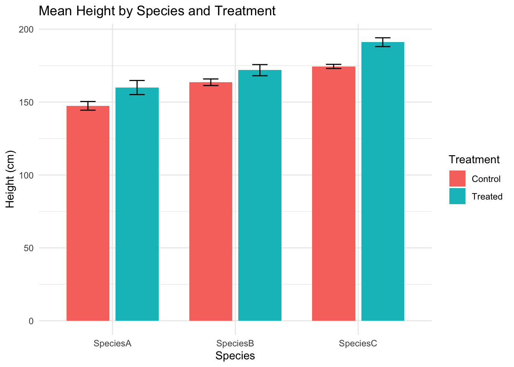
11.11.4 Saving a plot
Many times we will want to save a plot as a png, jpg or pdf. We can easily do this the following way:
# Create plot into an object (in this case p)
p <- ggplot(data, aes(x = Species, y = Biomass_g, fill = Species)) +
geom_boxplot() +
theme_minimal()
p
# Save as PNG
ggsave("output/boxplot_biomass_species.png", p, width = 6, height = 4, dpi = 300)
# Or as PDF
ggsave("output/boxplot_biomass_species.pdf", p, width = 6, height = 4)